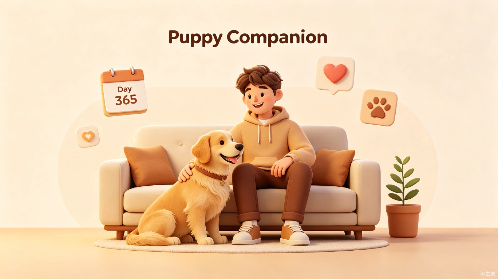

小狗陪伴器
让养狗的日常具象化，用温柔的方式记录每一个陪伴的瞬间。

🐕产品理念
想解决什么问题
养狗的日常非常碎片化——早晨的散步、午后的撒娇、傍晚的喂食、睡前的抚摸……这些瞬间往往只停留在手机相册的某张照片里，缺乏系统、连贯的记录方式。小狗陪伴器希望让养狗的日常具象化，为每一位养狗人士提供一个有温度、有深度的记录空间。
为什么会想到做这个
养狗的日常虽然碎片化，却充满了细腻的情感。很多养狗人（尤其是年轻人）希望能有一种更有仪式感、更系统的方式来回顾与小狗共同走过的路。从「第1天」到「第1000天」，每一天都值得被温柔地记录下来。
🎯目标用户及痛点
面向哪些用户
养狗人士，尤其是年轻人群体。他们通常生活节奏快、数字原住民、注重生活仪式感，愿意为爱宠投入时间和情感，同时也习惯通过手机应用管理日常生活。
在什么场景下使用
- 晨间记录 — 出门前快速勾选小狗今日状态（精神状态、食欲、排便情况）
- 陪伴打卡 — 查看今天是和小狗相伴的第多少天，生成分享卡片
- 知识获取 — 每天推送一条实用养狗小知识，3分钟轻松阅读
- 成长回顾 — 月末或年末一键生成小狗的专属成长月报/年报
当前痛点
碎片化记录
仅有日常拍照、视频散落在相册中，没有系统整合，回顾时翻找困难。
缺乏时间感知
很难直观感知「陪伴了多久」，缺少累积的仪式感与情感厚度。
知识获取零散
养狗知识分散在各类平台，质量参差不齐，新手容易被误导。
💡价值与意义
社会价值 — 深化人宠情感联结
在快节奏的现代生活中，年轻人与宠物之间的情感联结日益加深。小狗陪伴器不仅是一个记录工具，更是一种情感载体。它通过「陪伴天数」的累积可视化，赋予日常琐碎以仪式感，帮助用户建立更深的人宠情感纽带。
同时，系统化的知识模块能够引导科学养宠，减少因知识缺乏导致的健康问题或弃养现象，从微观层面推动更负责任的养宠文化。
效率提升 — 结构化记录替代碎片化信息
将碎片化的拍照、视频转化为结构化的日常记录，大幅降低回顾与整理的认知成本。用户无需在相册中翻找，即可一览小狗的成长轨迹与健康趋势。
内置的养狗知识库以场景化、碎片化的方式呈现，让用户在3分钟内获得当天所需的知识，避免在海量信息中筛选的时间浪费，真正做到「每天学一点，养宠更专业」。
✨核心功能预览
📅 陪伴日历
自动计算与小狗相伴的第N天，每日一键打卡，生成精美的分享卡片。
📝 状态记录
快速记录小狗每日精神状态、食欲、排便、运动情况，形成健康档案。
📚 每日一知
每天推送一条经过筛选的实用养狗知识，覆盖喂养、训练、健康等场景。
📊 成长报告
按周/月/年自动生成小狗专属成长报告，回顾陪伴路上的每一个里程碑。